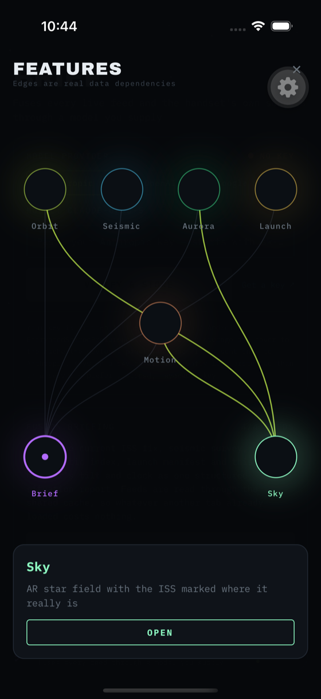

A React Native kit that is already debugged, and written to be adopted by coding agents as much as by people. Seven working screens against live public APIs, a stale-while-revalidate cache, an in-app devtools overlay — and a contract file that tells an agent exactly what it must not break.
Drag to look around · tap an object to lock the view onto it · the ISS is usually below your horizon, which is exactly why the app has a lock
The kit ships a contract, not just code. AGENTS.md is self-contained: an agent working in a different repository can read that one file and apply the same conventions, including the twenty invariants that each cost real debugging time to find.
https://raw.githubusercontent.com/mutaaf/mobile-starter/main/AGENTS.md
https://mutaaf.github.io/mobile-starter/llms.txt
https://mutaaf.github.io/mobile-starter/agents.json
Better still, vendor it. Nested AGENTS.md files are
picked up automatically by most coding agents when work happens in that subtree, so once
mobile/ exists its contract applies on its own.
Clone, verify, run. Green before you change a line.
Add a sibling and share logic, not components. Your business logic, types and API clients port as-is; your view layer does not.
Take the conventions, not the scaffold: the jest block, the E2E flows, the CI workflow and the contract.
The scaffold is a working telemetry console, not a placeholder screen — so the harness is proven against real network, real sensors and real gesture handling. Every API is public, keyless and HTTPS.
Live ISS position polled every 4s, with the ground track interpolated between fixes so a slow poll still reads as motion.
Worldwide earthquake feed with magnitude-scaled bars on a fixed scale, so refreshes stay comparable.
An animated SVG gauge grown by stroke-dashoffset in a worklet, plus a scrubbable 6-hour sparkline that never touches the JS thread.
Twenty live countdowns ticking from one shared UI-thread clock — at zero React renders.
Accelerometer and gyroscope driving a spring-damped bubble level, haptics on crossing level, and a pan + pinch gesture card.
Fuses all four feeds plus the handset's own tilt and clock into one situation report. Your key, held in the device keystore.
Point the phone up. Real stars, constellation figures, the ISS as NASA's own geometry on the GPU, and aurora curtains toward the magnetic pole. The version at the top of this page is a port of the same maths.
Every frame below is a screenshot of the app running on an iOS simulator against the live feeds — captured by the Maestro flow that ships in the repo, so they cannot quietly go stale while the app changes underneath them.

Screens never fetch. They subscribe to a key, and every request goes through one place that owns stale-while-revalidate, single-flight dedup, persistence and instrumentation. A cold start paints from the last session while the network catches up.
Drag the badge, or tap to open an inspector: live cache entries with per-key invalidate, release and evict; a rolling event timeline; hit rate and fetch timings; and network injection — force offline, fail the next request, add latency.
Injection goes through the cache, so it applies to every screen at once and no call site knows it exists.
useFrameCallback is not a vsync counter —
it fired ~8×/sec while dumpsys gfxinfo reported a
28 ms median frame. The badge shows JS-thread FPS via rAF, which is honest; the
worklet tick rate is labelled as exactly that.
Written down so a regression is recognised rather than re-derived. A sample:
await makes every query claim render was never calledNo auth, no data layer beyond the demo feeds, no store submission. The E2E suite is two short flows proving the harness works, not coverage. CI runs on emulators and simulators only — no real-device farm. A device-installable IPA needs an Apple Developer account; a sideloadable APK builds locally with no account at all.